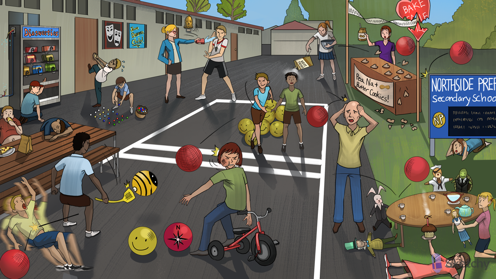

Tricycle: tricyclic antidepressants (TCAs)
Imprint: imipramine (and derivatives desipramine, clomipramine - TCAs)
Tripping: amitriptyline, nortriptyline
Prevented from picking up smiley face and compass balls: TCAs inhibit presynaptic uptake of serotonin and norepinephrine
Happy and sad masks: TCAs can be useful in treatment resistant depression
Resistant door: TCAs can be useful in treatment resistant depression
Pain from Diasweeties machine: TCAs treat diabetic neuropathy
Chronically frayed wire: TCAs treat chronic pain (e.g. neuropathic pain)
Pounding head bell: TCAs can be used for migraine prophylaxis
Obsessively neat: clomipramine (TCA) treats OCD (SSRIs first line)
Rejected advances: TCAs can cause sexual dysfunction
Anti-muscarinic tea party: TCAs inhibit muscarinic acetylcholine receptors → dry mouth, constipation, blurred vision, urinary retention
Northside Prep: nortriptyline and desipramine (secondary amines)
Protected by secondary sign: secondary amines (e.g. nortriptyline and desipramine) are associated with less cholinergic effects
Confused elderly: TCAs are relatively contraindicated in elderly patients due to severe anticholinergic and antihistamine effects
Bee swatter: TCAs block H1 histamine receptors
Hefty kid: TCAs can cause increased appetite and weight gain
Sleeping kid: TCAs can cause sedation
Extinguished alpha flame: TCAs block alpha-1 receptors
Passed out: TCAs can cause orthostatic hypotension
Broken hearts: TCAs induced cardiotoxicity (e.g. fatal cardiac arrhythmias) is the most common cause of death in overdose
Inactivated peanut butter jar: TCAs block the cardiac fast Na+ channels
Wide QRS crack: TCAs can widen the QRS complex on ECG
Twisted torsades streamer: TCAs can induce torsades
Baking soda: sodium bicarb teats widened QRS and ventricular arrhythmia caused by TCA overdose
Shaking kid: TCAs can induce seizures
Stack of smiley faces: TCAs can cause serotonin syndrome